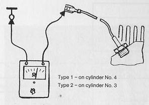

Resistance of cylinder head temperature sensor too high.
- With engine hot (oil temperature above 80°C/176°F)
- Pull wire off temperature sensor
- Connect ohmmeter
Resistance less than 300ohms

Tip
Resistance as specified
Resistance above specified value.